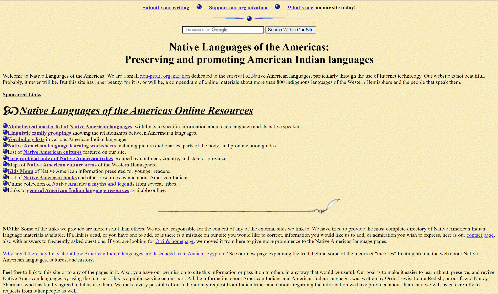
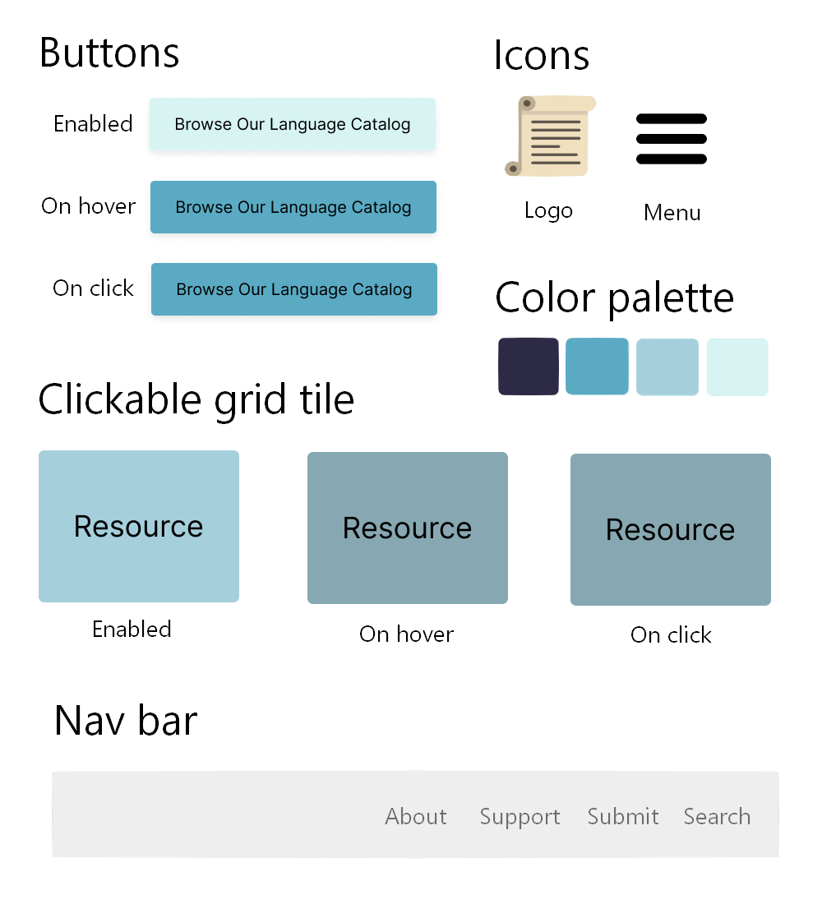
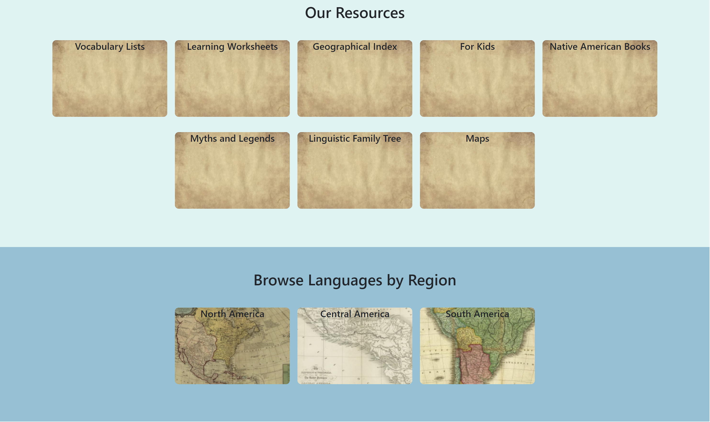
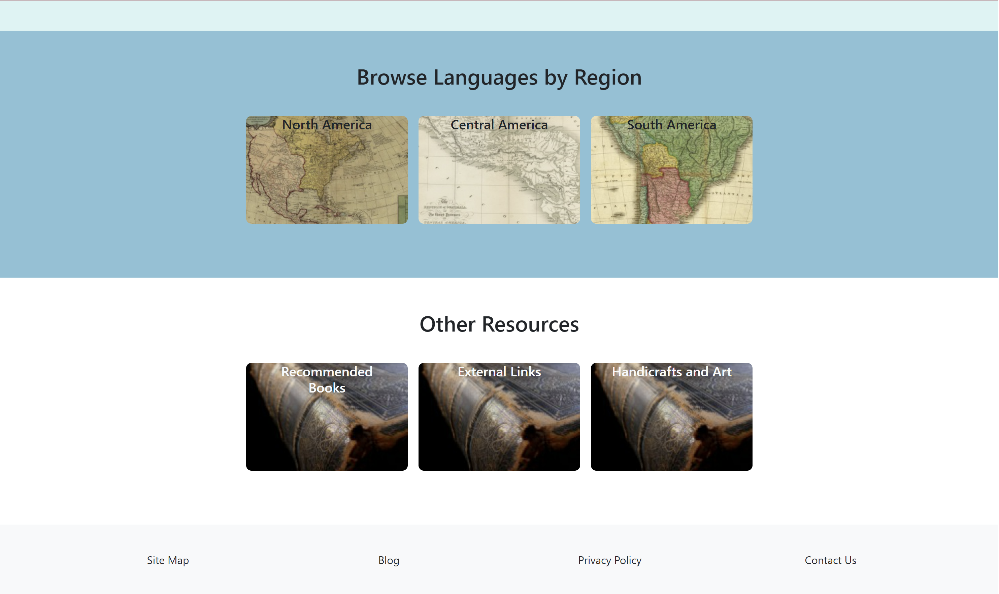
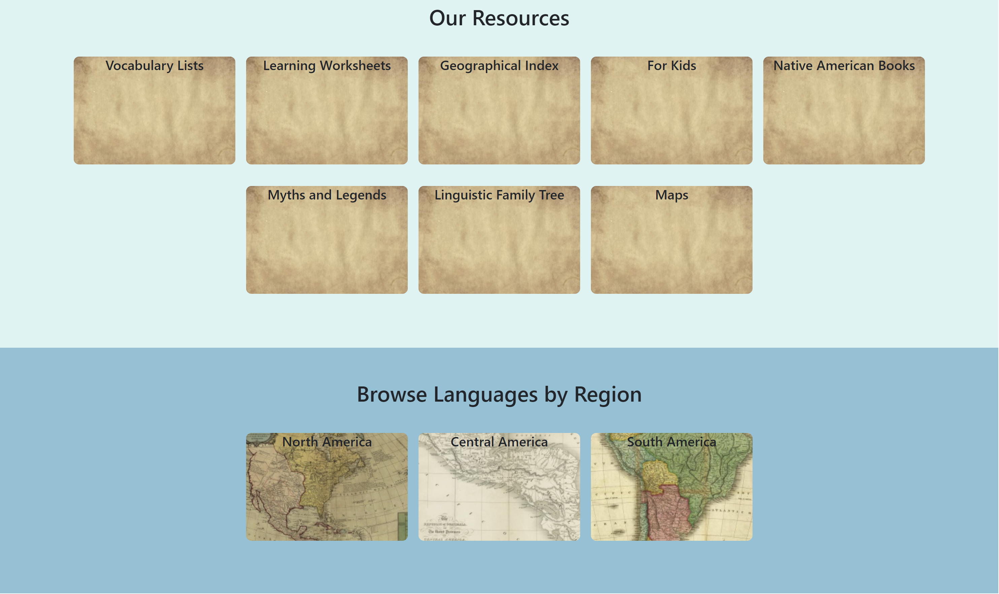
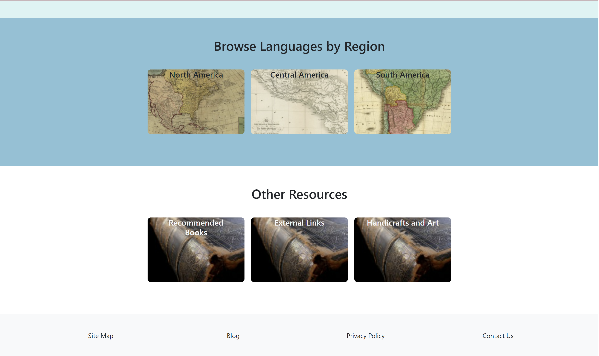

Responsive Redesign
Redesigning a Native American Languages Website
Original Website
Redesigned Webpage
The links above link to the original website, and my proposed responsive redesign of the website's homepage.

This is a screenshot of the original webpage, which shows its lack of margins/padding, and its text-heavy hierarchy.
Usability Issues of the Original Webpage
- Hierarchy is not clear: there are some links at the top of the page, followed by a long section of introductory text, and then followed by more links.
- Several of the links on the page lead to the same page, but are worded differently and so make the user think they are different links.
- On the flip side, there are different links that seem to lead to the same thing but don’t (ex, there is a section at the bottom of the page of recommended books, but the “Native American Books” link from the first section of the page leads to a different page entirely)
- Visually, the page is very text heavy and requires a lot of reading in order to figure out where to navigate to
- The search bars are confusing: there are two (one at the top, one at the bottom) and both have differently labeled buttons, but they both conduct the same Google searches
- The search bar on the top of the page implies that the search will be within the site, but this is not the case–the search is powered by Google and therefore displays results from across the web
- The lack of margins makes it difficult to read large blocks of text
- If a user ever wanted to go back to the website a later time and navigate to a page they had visited previously, they could still have to read through the whole website in order to find the link since they are not organized memorably
Accessibility Issues
I passed the webpage through WebAIM WAVE to assess the accessibility issues of the page. The use of images without alt text as bullet points and section dividers makes the site less accessible (this error was flagged 98 times, from the sheer number of blue bullet point images on the page). The use of underlined section headers is also flagged as an issue. I agree that it is unnecessary to use an image of a bullet point several times on a page, instead of simply using a bulleted list in HTML or having fewer links on the screen. Additionally, underlined text usually signals a link, so the fact these headers are not links can confuse users’ mental model of the webpage.
Prototyping
Based on the usability and accessibility issues identified above, I created low fidelity and high fidelity wireframes of the webpage on three possible device sizes.
Low-Fidelity Wireframes
These wireframes were made in Balsamiq and roughly outline the new layout and hierarchy of the page. I decided to consolidate all the links into fewer clickable tiles, as well as group the tiles according to their theme.
Visual Design Style Guide
This style guide highlights the various visual states of the main components of the page, and how they change visually with user interactions

High-Fidelity Wireframes
These wireframes were made in Figma and fold in the elements from the visual style guide above
Redesigned Webpage
For the most part, my redesigned webpage closely follows the high-fidelity wireframe in terms of design. The main change was using images for the tiles rather than solid colors to make the webpage more visually dynamic. Some screenshots are included below.
When the display dimensions are smaller, the navbar collapses as expected into a hamburger menu, the tile grids changes their number of rows and columns, and text scales appropriately. This is all demonstrated in the screenshot below.
 


